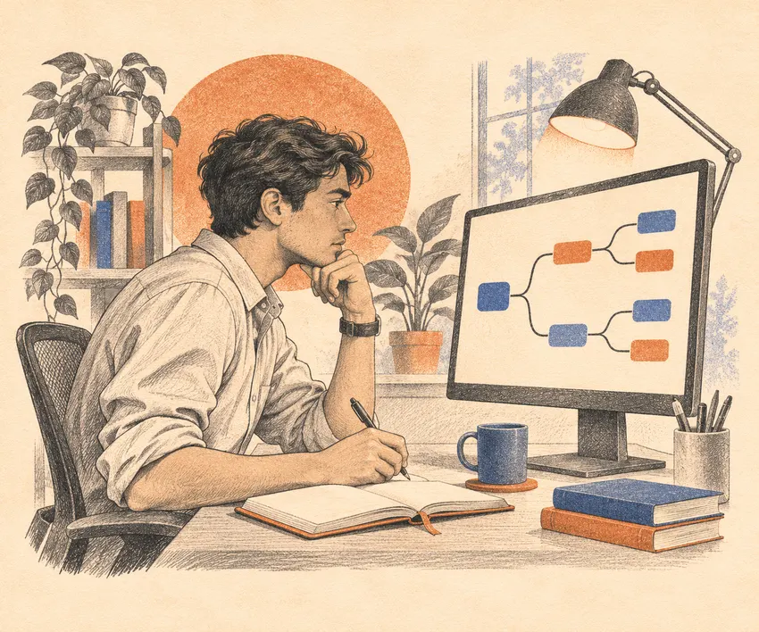

Certifications
Select a credential to explore its focus.
Cloud engineering
AWS Certified Solutions Architect – Associate
Architecture decisions about identity, network boundaries, availability, and recovery.
AWS Certified DevOps Engineer – Professional
Release automation, deployment permissions, monitoring, and operational recovery.
Microsoft Certified: Azure Administrator Associate
Administration of Azure identities, compute, storage, and virtual networks.

Security engineering
OffSec Certified Professional (OSCP)
Scoped security assessments, documenting findings, and communicating remediation priorities.
SecAI
My AI security focus includes retrieval permissions, untrusted inputs, and the tools an AI agent can access.
CompTIA Security+
Foundations of identity, risk, network defense, and incident response.

Information security management
ISO/IEC 27001
Information security management systems, risk treatment, control ownership, and evidence review.